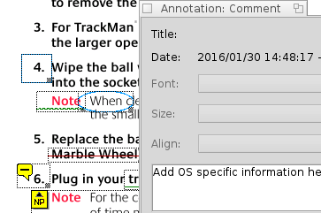
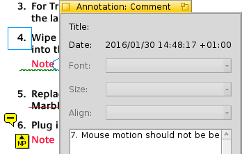

BePDF erlaubt das Erstellen und Ändern von Anmerkungen in PDF Dateien.
Mit diesem Button lässt sich die Anmerkungs-Werkzeugleiste auf der linken Fensterseite ein- und ausblenden. Die Anmerkungs-Funktion erlaubt das Anlegen von Kommentaren und Markierungen die mit einer PDF Datei abgespeichert werden können. |
Um eine Anmerkung zu erzeugen, wird zuerst die Art der Anmerkung aus der Werkzeugleiste gewählt; BePDF wechselt in den Editier-Modus. Alle Anmerkungen auf der aktuellen Seite werden mit einem gepunkteten Rahmen markiert. Um eine neue Anmerkung zu erstellen, markiert man den Bereich im Dokument auf den sich die Anmerkung bezieht. Dieser Bereich wird später auf Mausklicks reagieren. Zieht man den Markierungsrahmen z.B. über eine Abbildung, wird die Anmerkung immer erscheinen wenn irgendwo auf diese Abbildung geklickt wird. Ist der Anmerkungsrahmen erstellt und der Editiermodus noch aktiv, kann der Rahmen durch ziehen an der Ecke rechts unten verkleinert und vergrößert oder durch klicken und ziehen innerhalb des Rahmens verschoben werden. |  | ||
Nach einem Rechtsklick auf die Anmerkung und die Wahl von "Eigenschaften" aus dem Kontextmenü, erscheint ein Textfeld in das man (weiteren) Text eingeben kann. Ist man fertig, schließt man das Textfeld wieder. So lässt sich das gesamte Dokument mit Anmerkungen versehen ohne den Editiermodus zu verlassen. Auch grafische Anmerkungen lassen sich so mit zusätzlichem Text erweitern. Ist die Arbeit an den Anmerkungen erledigt, klickt man das Hand-Symbol der Werkzeugleiste an. Der Rahmen um die Anmerkung verschwindet. Klickt man nun in den Bereiche einer Anmerkung, erscheint der vorher eingegebene Text in einem Pop-Up Fenster. Um die Anmerkungen nicht verlieren, muss das PDF vor dem Schließen über das Menü Datei | Speichern unter... gespeichert werden. |  |
Nur unverschlüsselte PDFs können mit Anmerkungen versehen werden.
Anmerkungen können nur erstellt werden wenn das PDF Dokument nicht gedreht wurde.
Wird in BePDF das Ghostscript Rendering benutzt, können keine Anmerkungen dargestellt werden.
Anmerkungen können unabhängig vom Betriebssystem fon jedem PDF Viewer dargestellt werden (sofern er dieses Feature unterstützt).
Folgende Arten von Anmerkungen werden nicht unterstützt: Links, Linien, Stempel, Tinten, Dateianhänge, Sounds, Filme, Widgets, Druckmarkierungen und TrapNets